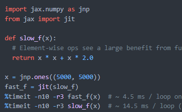
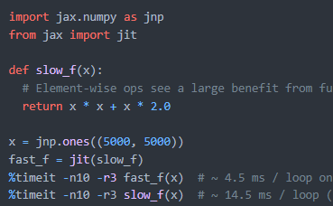

Inferring source properties
Data

Source properties

Data
Source properties
Multimodality
https://gracedb.ligo.org/superevents/S230601bf/view/
Small posterior (sometime)
Phys.Rev.X 9 (2019) 1, 011001
Credit: MCMC gallery

Real data
Simulated population


 
